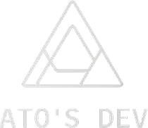

Torre de Controle · Performance de HUBs
Painel de performance de 4 hubs de last mile, usado pela presidência. ETL em Python com leitura em streaming de arquivos de 300–400 MB → PostgreSQL → Power BI, com 30M+ registros.
> olá, eu sou o
Analista de Dados
Transformo dados operacionais em decisão. Construo pipelines ETL em Python, bancos em PostgreSQL e dashboards em Power BI para operações de logística last mile, em um ambiente bilíngue português/chinês.

// sobre mim
Sou o Samuel, tenho 23 anos, sou natural de Osasco – SP e curso Ciência da Computação na Anhembi Morumbi. Comecei na tecnologia pela infraestrutura, com o técnico em Redes no ITB Prof. Munir José, e hoje atuo como Analista de Dados Pleno em uma operação logística de grande volume.
Meu trabalho vai da ponta à ponta: extraio e trato os dados com Python, organizo tudo em PostgreSQL e entrego painéis em Power BI com as regras de negócio da operação (SLA, pontualidade, backlog, devoluções). Gosto de automatizar o que é repetitivo e de garantir que o número que chega na diretoria esteja certo. Uso IA generativa no dia a dia para acelerar automações, revisar análises e gerar insights e KPIs para os dashboards, sempre sem expor dados sensíveis.
A base em infraestrutura me dá um perfil híbrido: entendo o servidor, a rede e o negócio, e converso bem com todos esses lados.
Logística last mile · ETL, PostgreSQL, Power BI, reports PT/ZH
Transportadora · economia de R$ 50 mil em precificação, TMS (SSW), Microsoft 365/Teams e dashboards
Varejo · caixa, compras, recebimento e estoque
Anhembi Morumbi · Técnico em Redes – ITB (2021)
// projetos
Painéis corporativos aparecem com as informações ocultadas por confidencialidade.
Painel de performance de 4 hubs de last mile, usado pela presidência. ETL em Python com leitura em streaming de arquivos de 300–400 MB → PostgreSQL → Power BI, com 30M+ registros.
Acompanha a saída das rotas noturnas e aponta o gargalo de cada atraso: doca, carregamento ou liberação. Fonte em Google Sheets, título bilíngue PT/ZH.
Monitora pacotes em risco, valores envolvidos e responsáveis por etapa, com filtros por região e cliente para agir antes da perda.
Redesenho do painel de logística reversa. Corrigi um filtro no ETL que descartava ~63% dos registros válidos e devolvi a confiança no indicador.

Site para empresa de instalações elétricas com área do cliente, pedido de orçamento, blog e painel administrativo.
Script que detecta dispositivos USB conectados, registra log e envia alerta com captura de tela pelo Telegram.
Planilha automatizada com Python e dashboard em Looker Studio para acompanhar receitas, gastos e metas.
Executável para diagnóstico e otimização de Windows 10/11, usado nos atendimentos de manutenção. Em desenvolvimento.
Pendrive com várias ISOs (Windows e Linux) configurado com Ventoy e tema próprio para instalações e recuperação.
// galeria
Textos, números e logotipos ocultados (LGPD e confidencialidade). Clique para ampliar.
// stack

// também atendo como
Manutenção preventiva, formatação e otimização de notebooks e desktops, configuração de impressoras em rede e suporte técnico. Atendimento aos sábados e em alguns dias da semana após as 19h, com garantia de 30 dias.
// contato
Aberto a oportunidades em dados, BI e engenharia de dados.